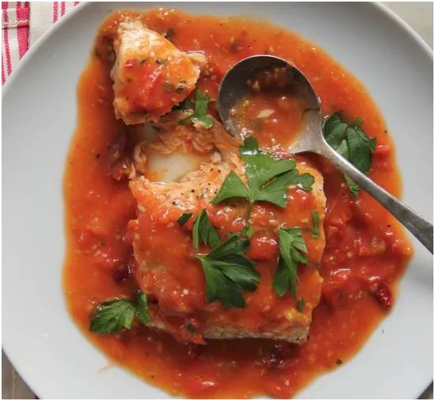
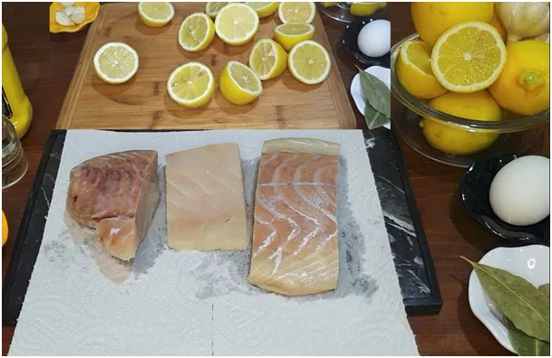
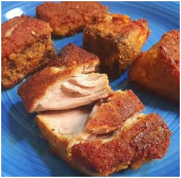
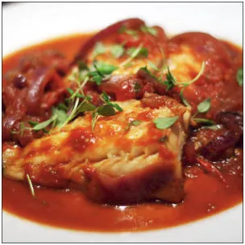

Turecka ryba po grecku na Wigilię i na co dzień, czyli kosmetyki i suplementy nie powstają z niczego.
Dorsza kroimy w dzwonka, solimy samą rybę, wciskamy do pokrojonej ryby całą cytrynę, czekamy kwadrans. Lekka panierka. np. mąka migdałowa na żółtku.

Opiekam na gęsim smalcu. Postu w Wigilię nie ma, i nikt się nie zorientuje, a to najlepszy tłuszcz do smażenia. Ryba najpierw na mocnym ogniu, potem pod przykryciem wolno dochodzi.

"Sos grecki" to z 2-3 marchewki, 1/4 selera, trochę korzenia pietruszki, wszystko starte na tarce grubej. Posiekany por też może być, ma wyrazisty smak. Siekamy białą część, zielone zostawiamy do strojenia na półmisku. Z 2-3 cebule posiekane. Na patelni dusimy wszystko w płytkiej wodzie. Najważniejsze: dużo lauru i ziela angielskiego w bulionie, z 5 liści, 5 kulek. Sól na samym końcu. Pieprzu nie daję do tego dania, taka ekstrawagancja. Warzywa wolno dusimy ok. kwadransa.

Teraz "pomidory"! Nigdy świeże, tylko sok lub pomidory w puszce, robię z nich miazgę dłonią. Gdy robimy z soku, dajmy go dużo i powoli odparowujmy sos do konsystencji majonezu. Nigdy nie używamy koncentratu pomidorowego, jest chemizowany, psuje smaki.
Zimną, usmażoną rybę układamy w półmisku z przerwami. Zalewamy rybę sosem z warzywami. Warto zrobić to dzień wcześniej, aby ryba w lodówce przeszła aromatem warzyw i przypraw.

Danie doskonale wychodzi z dorsza, ale i z jego kuzyna czerniaka czy plamiaka. Miruna ze skórą to też sukces kulinarny, bo pieczona skóra nadaje smaczku. Wszelkie ryby jak kupować to tylko ze skórą, w niej są najcelniejsze rzadkie pierwiastki. Jeśli kupujecie rybę bez skóry, to za te rzadkie "minerały" płacicie drugi raz słono w aptece. Kosmetyki i suplementy nie powstają z niczego. "Grosz lepiej zanieść do karczmarza niż do aptekarza."
Smacznego i na zdrowie!
Paweł Klimczewski